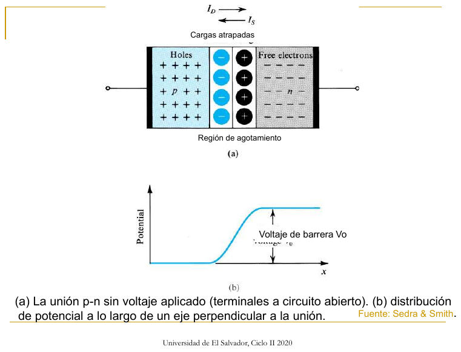
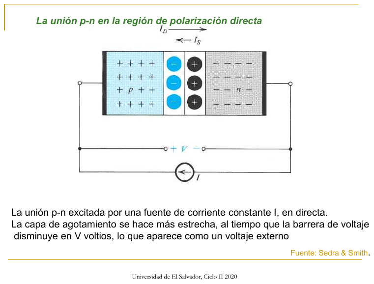
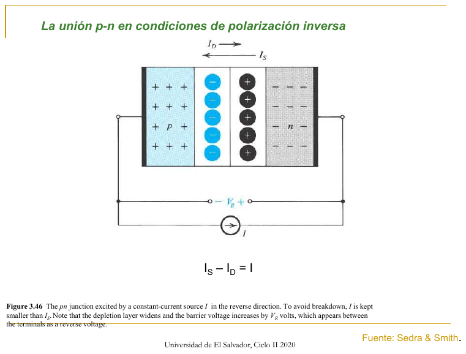
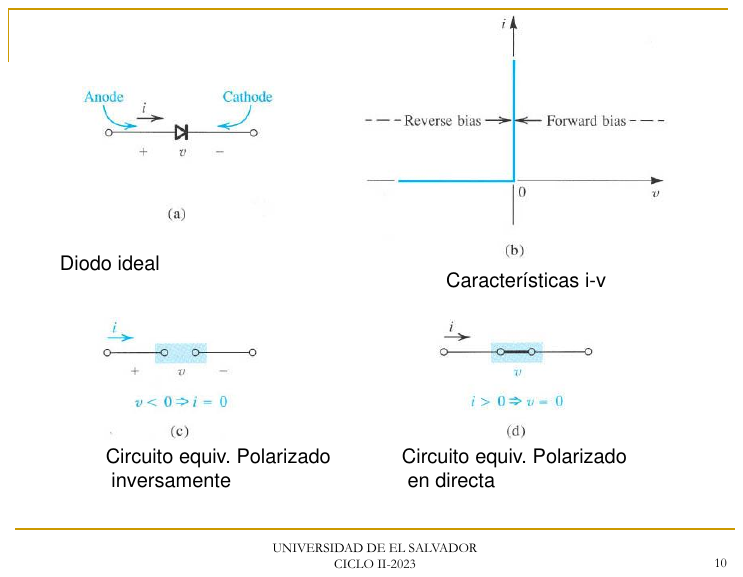
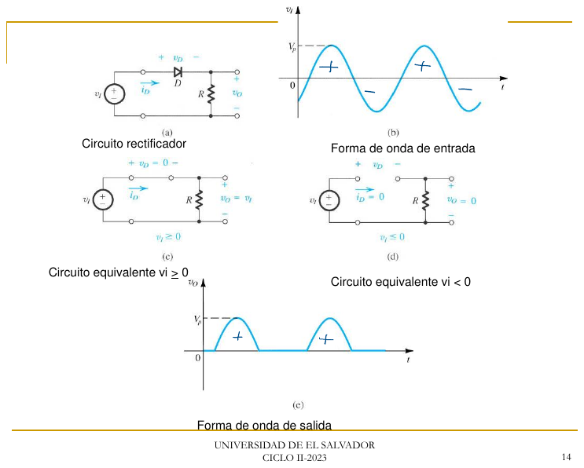
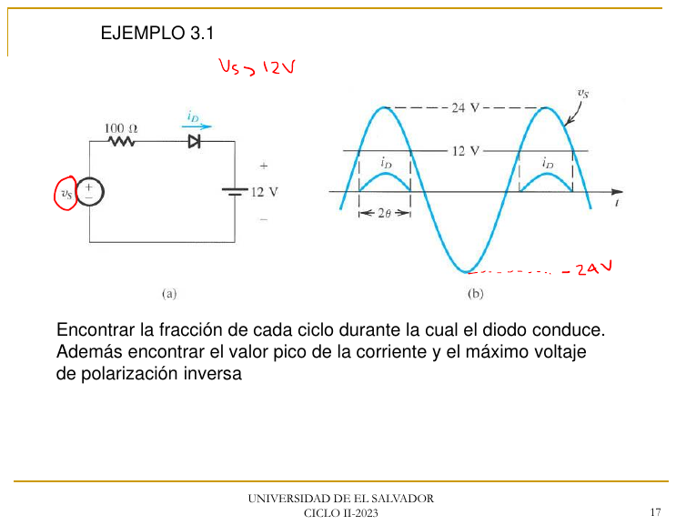

Direcciones. Con p a la izquierda y n a la derecha:
Los electrones difunden de n hacia p, es decir de derecha a izquierda. Los huecos difunden de izquierda a derecha.
El campo apunta de n hacia p. Por eso los electrones se desplazan de izquierda a derecha y los huecos de derecha a izquierda.
En polarización directa la difusión aumenta mucho, el desplazamiento se mantiene casi igual y la corriente total aumenta.
En polarización inversa la difusión disminuye, el desplazamiento se mantiene y la corriente total es la pequeña corriente inversa IS.
Ejemplo del parcial 2017 con NA = 10¹⁷ y ND = 10¹⁶: V0 = 0.728 V usando VT = 25 mV, Emax = 45.2 kV/cm y W = 0.32 µm. La versión 2 del mismo parcial usa 10¹⁸ y 10¹⁷ y obtiene 0.843 V, 153.9 kV/cm y 0.109 µm. El profesor usa VT = 25 mV en este problema.
Circuitos de ejemplo

Unión pn en circuito abierto: región de agotamiento y barrera V0 (FUNCIONAMIENTO FÍSICO)

Unión pn en polarización directa

Unión pn en polarización inversa
2. Diodo ideal y análisis por estados
Material: DIODOS IDEALES 24 JULIO · DIODOS APLICACIONES PARTE 1 · DISCUSION DE PROBLEMAS DIODO MODELO IDEAL · Problemas 4, 9 y 11–23
Ideal: conduce como un corto con i > 0 y bloquea como un circuito abierto con v < 0.
Caída constante: cuando conduce vale una fuente VD, típicamente 0.7 V. El profesor usa también 0.6, 0.65, 0.85, 1 o 1.25 V, o "lo observado en laboratorio".
Lineal por tramos:v = VD0 + i·rD. En 2017 usó VD0 = 0.65 V y rD = 30 Ω.
Método para circuitos con varios diodos
Supón un estado para cada diodo. Empieza por lo intuitivo: conduce el que tiene la fuente más grande empujando corriente en su sentido.
Sustituye cada diodo por su modelo: una fuente VD si conduce o un circuito abierto si no conduce.
Resuelve con nodos.
Verifica: cada diodo "ON" debe tener ID > 0 y cada diodo "OFF" debe tener VD < VD0. Si algo falla, cambia la suposición y repite.
Ejemplo del parcial 2017 V1: la respuesta es D1 y D2 conduciendo y D3 apagado. Resulta ID1 = ID2 = 0.976 mA, V1 = 0.467 V y V2 = V3 = −0.233 V. Comprueba que IR1 = (20 − 0.467)/10k = 1.953 mA sea igual a ID1 + ID2.
Media onda con R:Ipico = Vp/R y PIV = Vp. Con caída constante el diodo conduce desde θ = arcsen(VD/Vp) hasta π − θ.
Circuitos de ejemplo

Diodo ideal: característica i-v y circuitos equivalentes (DIODOS IDEALES)

Rectificador de media onda con diodo ideal

Ejemplo 3.1: cargador de batería de 12 V con diodoParcial 2017 P1: tres diodos en DC
3. Diodo real: modelo exponencial, temperatura y pequeña señal
Material: DIODO DE UNIÓN 26 JULIO · Diodos Características i-v · Problemas 27, 30, 35, 48, 50
i = IS(ev/nVT − 1) ≈ IS·ev/nVT VT ≈ 25 mV a 20 °C y 25.8 mV a 25 °Cv2 − v1 = nVT·ln(I2/I1) = 2.3·nVT·log(I2/I1) → unos 60 mV por década con n = 1
Área: IS es proporcional al área. Un diodo con 10 veces el área tiene V menor en VT·ln 10 ≈ 58 mV para la misma corriente.
Temperatura: a corriente constante v baja unos 2 mV/°C. IS se duplica cada 5 °C y la corriente inversa real se duplica cada 10 °C.
Iterativo:I = (VDD − V)/R, luego V = VT·ln(I/IS), y se repite. En el parcial 2014, con VDD = 1.5 V, R = 500 Ω e IS = 10⁻¹⁴ A, converge a ID = 1.71 mA y VD = 0.647 V.
Pequeña señal:rd = nVT/ID. En el atenuador con capacitores, vo/vs = rd/(rd + Rs). Para que la señal del diodo no pase del 10 % de su corriente DC, se exige vd ≤ VT·ln(1.1) ≈ 2.4 mV.
Problema típico del parcial "nota 7" (P1): una fuente de 10 mA alimenta dos diodos idénticos en paralelo, uno con R en serie. Se pide R para que V = 60 mV. Como VD2 − VD1 = V y I1 = V/R, I2 = 10 mA − V/R, se cumple eV/VT = I2/I1. Con VT = 25 mV, R = 60 mV·(e2.4 + 1)/10 mA ≈ 72 Ω.